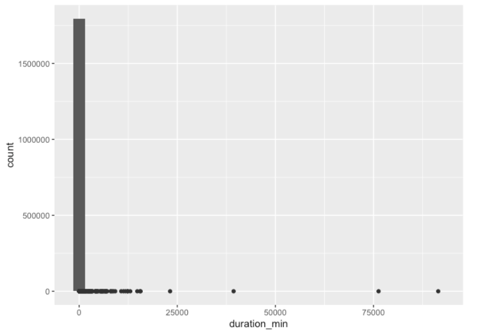
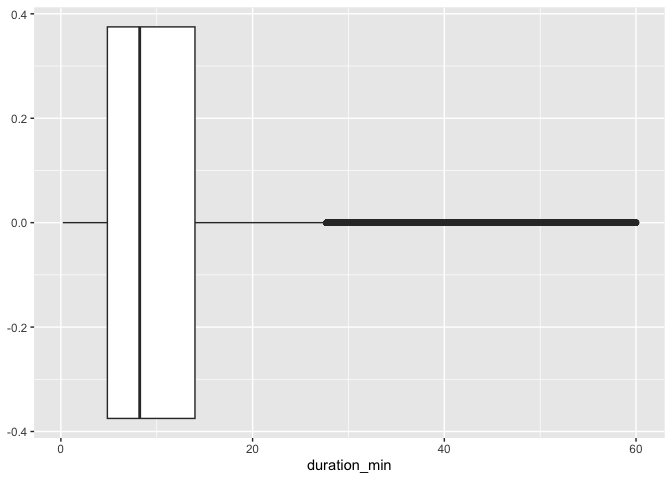
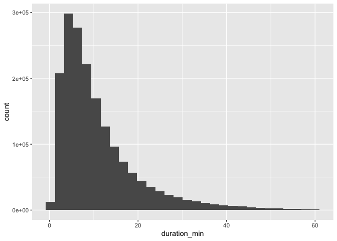
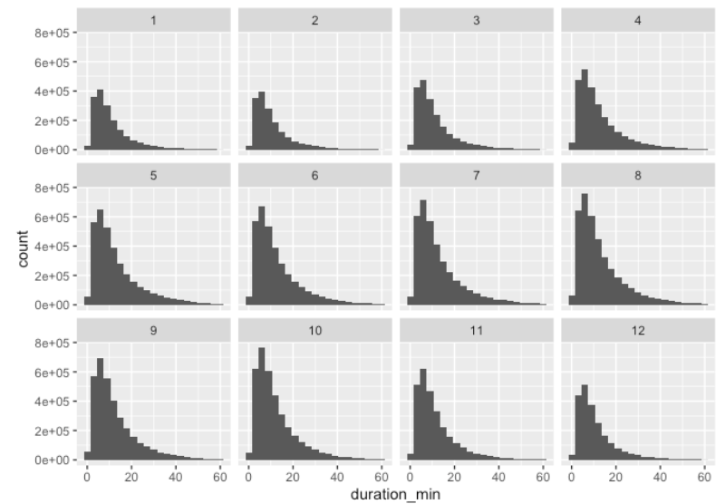
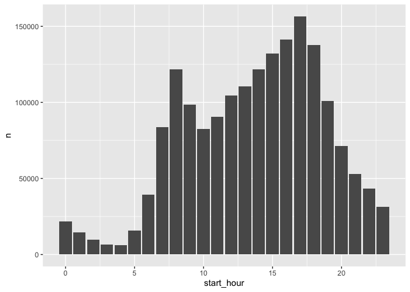
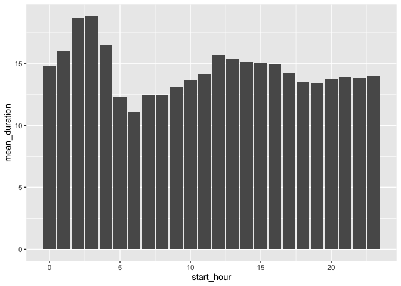
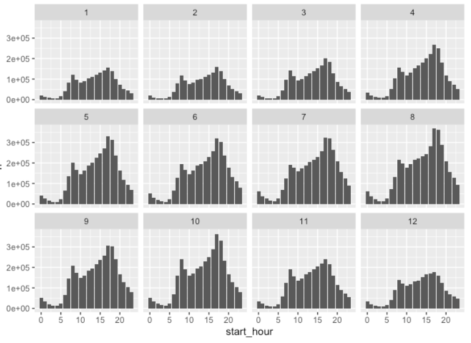
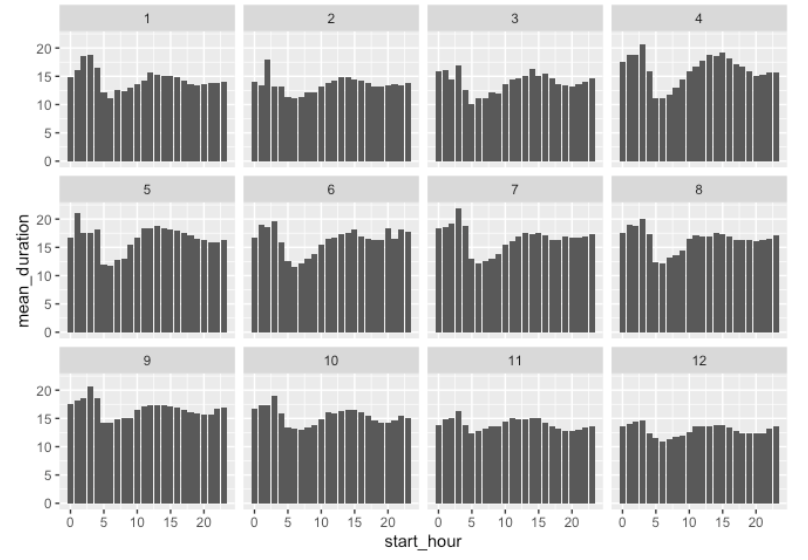

This section explores how CitiBike usage varies over
time in 2023, including
monthly trends, distribution of trip durations, and within-day ridership
patterns.
The original temporal analysis loads all 2023 monthly files, extracts
four variables
(ride_id, rideable_type,
started_at, ended_at), and stacks them into
one unified dataset.
library(tidyverse)
library(lubridate)
library(readr)
df_all = tibble()
folders = list.dirs("2023-citibike-tripdata", recursive = FALSE)
for (folder in folders) {
files = list.files(folder, pattern = "\\.csv$", full.names = TRUE)
for (file in files) {
df_temp = read_csv(file) |>
select(ride_id, rideable_type, started_at, ended_at)
df_all <- bind_rows(df_all, df_temp)
rm(df_temp)
gc()
}
}Temporal variables were created to support month-level and hour-level
analyses.
Trip duration was computed in both minutes and hours.
df_all = df_all |>
mutate(
start_month = month(started_at),
start_day = day(started_at),
start_hour = hour(started_at),
start_min = minute(started_at),
end_month = month(ended_at),
end_day = day(ended_at),
end_hour = hour(ended_at),
end_min = minute(ended_at),
duration_min = as.numeric(difftime(ended_at, started_at, units = "mins")),
duration_hour = as.numeric(difftime(ended_at, started_at, units = "hours"))
)The following summary table reports average duration, median
duration,
and total number of rides for each month.
monthly_avg = df_all |>
group_by(start_month) |>
summarise(
mean_duration = mean(duration_min, na.rm = TRUE),
median_duration = median(duration_min, na.rm = TRUE),
count = n()
) |>
knitr::kable()
monthly_avgTo explore duration patterns, January is examined first.
month1_his = ggplot(filter(df_all, start_month == 1),
aes(x = duration_min)) +
geom_histogram() +
geom_boxplot()
month1_his
To limit extremely long rides, the analysis caps durations at 60 minutes.
month1_box_1 = ggplot(filter(df_all, start_month == 1 & duration_min < 60),
aes(x = duration_min)) +
geom_boxplot()
month1_box_1
month1_his_1 = ggplot(filter(df_all, start_month == 1 & duration_min < 60),
aes(x = duration_min)) +
geom_histogram()
month1_his_1
A right-skewed distribution is observed consistently across all months.
month_his = ggplot(filter(df_all, duration_min < 60 & duration_min >= 0),
aes(x = duration_min)) +
geom_histogram(binwidth = 3) +
facet_wrap(~ start_month)
month_his
The shapes are similar across months, but overall ridership volume varies substantially.
This section investigates which times of day see the most CitiBike usage.
day1_table = df_all |>
filter(start_month == 1 & duration_min >= 0) |>
group_by(start_hour) |>
summarise(n = n(), mean_duration = mean(duration_min, na.rm = TRUE)) |>
knitr::kable()
day1_tableday1_col = df_all |>
filter(start_month == 1 & duration_min >= 0) |>
group_by(start_hour) |>
summarise(n = n()) |>
ggplot(aes(x = start_hour, y = n)) +
geom_col()
day1_col
Rides occur mainly during daytime (7 AM–9 PM).
day1_col_mean = df_all |>
filter(start_month == 1 & duration_min >= 0) |>
group_by(start_hour) |>
summarise(mean_duration = mean(duration_min, na.rm = TRUE)) |>
ggplot(aes(x = start_hour, y = mean_duration)) +
geom_col()
day1_col_mean
Nighttime rides (12 AM–4 AM) tend to be longer on average.
day_col = df_all |>
filter(duration_min >= 0) |>
group_by(start_month, start_hour) |>
summarise(n = n()) |>
ggplot(aes(x = start_hour, y = n)) +
geom_col() +
facet_wrap(~ start_month)
day_col
Summer months show clear peaks and heavier overall usage.
day_col_mean = df_all |>
filter(duration_min >= 0) |>
group_by(start_month, start_hour) |>
summarise(mean_duration = mean(duration_min, na.rm = TRUE)) |>
ggplot(aes(x = start_hour, y = mean_duration)) +
geom_col() +
facet_wrap(~ start_month)
day_col_mean
December exhibits longer-than-average ride durations throughout the day.